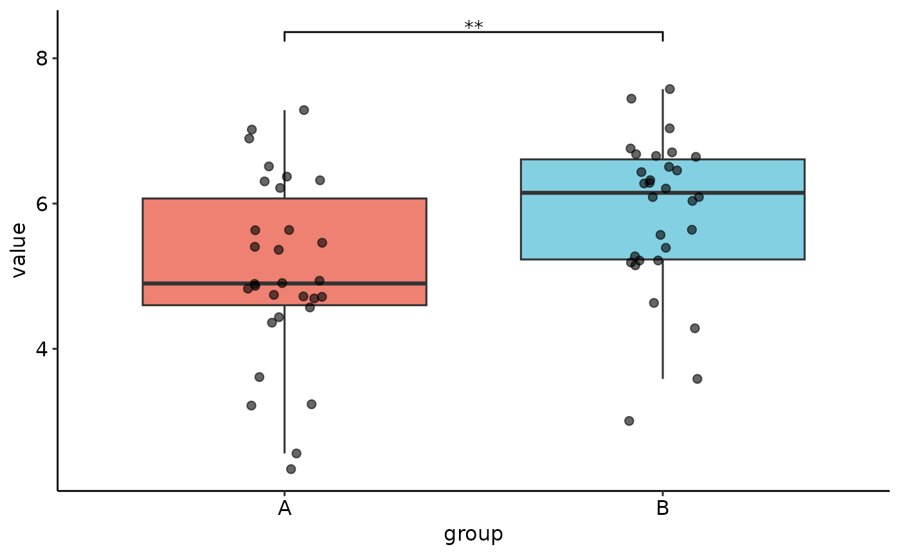
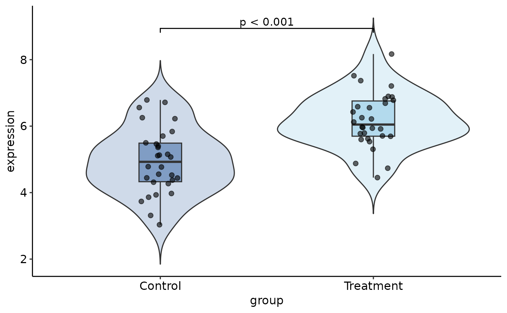

Perform t-test or Wilcoxon test (automatically selected based on data characteristics and sample size) with publication-ready visualization. Designed for comparing two groups only.
Usage
quick_ttest(
data,
group,
value,
method = c("auto", "t.test", "wilcox.test"),
paired = FALSE,
id,
alternative = c("two.sided", "less", "greater"),
var.equal = NULL,
conf.level = 0.95,
plot_type = c("boxplot", "violin", "both"),
add_jitter = TRUE,
point_size = 2,
point_alpha = 0.6,
show_p_value = TRUE,
p_label = c("p.signif", "p.format"),
palette = "qual_vivid",
verbose = TRUE,
...
)Arguments
- data
A data frame containing the variables.
- group
Column name for the grouping variable (must have exactly 2 levels). Supports both quoted and unquoted names via NSE.
- value
Column name for the numeric values to compare. Supports both quoted and unquoted names via NSE.
- method
Character. Test method: "auto" (default), "t.test", or "wilcox.test". When "auto", the function intelligently selects based on normality and sample size.
- paired
Logical. Whether to perform a paired test. Default is
FALSE. IfTRUE, theidparameter must be specified to match pairs.- id
Column name for the pairing ID variable (required when
paired = TRUE). Each unique ID should appear exactly once in each group. Supports both quoted and unquoted names via NSE.- alternative
Character. Alternative hypothesis: "two.sided" (default), "less", or "greater".
- var.equal
Logical or
NULL. Assume equal variances? IfNULL(default), automatically tested using Levene's test (ignored for paired tests).- conf.level
Numeric. Confidence level for the interval. Default is 0.95.
- plot_type
Character. Type of plot: "boxplot" (default), "violin", or "both".
- add_jitter
Logical. Add jittered points to the plot? Default is
TRUE.- point_size
Numeric. Size of the points. Default is 2.
- point_alpha
Numeric. Transparency of points (0-1). Default is 0.6.
- show_p_value
Logical. Display p-value on the plot? Default is
TRUE.- p_label
Character. P-value label format: "p.signif" (stars, default) or "p.format" (numeric p-value).
- palette
Character. Color palette name from evanverse palettes. Default is "qual_vivid". Set to
NULLto use ggplot2 defaults.- verbose
Logical. Print diagnostic messages? Default is
TRUE.- ...
Additional arguments (currently unused, reserved for future extensions).
Value
An object of class quick_ttest_result containing:
- plot
A ggplot object with the comparison visualization
- test_result
The htest object from
t.test()orwilcox.test()- method_used
Character string of the test method used
- normality_tests
List of Shapiro-Wilk test results for each group
- variance_test
Levene's test result (if applicable)
- descriptive_stats
Data frame with descriptive statistics by group
- auto_decision
Details about automatic method selection
- timestamp
POSIXct timestamp of analysis
Details
"Quick" means easy to use, not simplified or inaccurate.
This function performs full statistical testing with proper assumption checking:
Automatic Method Selection (method = "auto")
The function uses an intelligent algorithm that considers both normality and sample size:
Large samples (n ≥ 100 per group): Prefers t-test due to Central Limit Theorem, even if Shapiro-Wilk rejects normality (which becomes overly sensitive in large samples).
Medium samples (30 ≤ n < 100): Uses Shapiro-Wilk test with a stricter threshold (p < 0.01) to avoid false positives.
Small samples (n < 30): Strictly checks normality with standard threshold (p < 0.05).
This approach avoids the common pitfall of automatically switching to non-parametric tests for large samples where t-test is actually more appropriate.
Important Notes
Two groups only: This function requires exactly 2 levels in the grouping variable.
Sample size warnings: The function will warn if sample sizes are very small (< 5) or highly unbalanced (ratio > 3:1).
Missing values: Automatically removed with a warning.
Examples
# Example 1: Basic usage with automatic method selection
set.seed(123)
data <- data.frame(
group = rep(c("Control", "Treatment"), each = 30),
expression = c(rnorm(30, mean = 5), rnorm(30, mean = 6))
)
result <- quick_ttest(data, group = group, value = expression)
#>
#> ── Automatic Method Selection ──
#>
#> ℹ Checking normality for each group...
#> ✔ Data appears reasonably normal (using p < 0.01 threshold for medium samples).
#> Control: n = 30, p = 0.797
#> Treatment: n = 30, p = 0.961
#> ✔ Variances appear equal (Levene's test, p = 0.304)
#> ✔ Using Student's t-test (equal variances assumed)
#>
#> ── Statistical Test ──
#>
#> ✔ Significant difference detected (p < 0.001)
#>
#> ── Creating Visualization ──
#>
#> ✔ Loaded palette "qual_vivid" ("qualitative"), 9 colors
#> ✔ Analysis complete!
print(result)

#>
#>
#> ── Quick t-test Results ──
#>
#>
#> ℹ Method: t.test
#> ✔ Significant difference (p < 0.001)
#>
#>
#> ── Descriptive Statistics
#> # A tibble: 2 × 7
#> group n mean sd median min max
#> <fct> <int> <dbl> <dbl> <dbl> <dbl> <dbl>
#> 1 Control 30 4.95 0.981 4.93 3.03 6.79
#> 2 Treatment 30 6.18 0.835 6.05 4.45 8.17
#>
#> Use `summary()` for detailed results.
# Example 2: Paired samples (e.g., before/after)
paired_data <- data.frame(
patient = rep(1:20, 2),
timepoint = rep(c("Before", "After"), each = 20),
score = c(rnorm(20, 50, 10), rnorm(20, 55, 10))
)
result <- quick_ttest(paired_data,
group = timepoint,
value = score,
paired = TRUE,
id = patient)
#> ✔ Validated 20 paired observations.
#>
#> ── Automatic Method Selection ──
#>
#> ℹ Checking normality of paired differences...
#> ✔ Differences appear normal (Shapiro-Wilk p >= 0.05).
#> Differences: n = 20, p = 0.351
#> ✔ Using paired t-test
#>
#> ── Statistical Test ──
#>
#> ✔ Significant difference detected (p = 0.0048)
#>
#> ── Creating Visualization ──
#>
#> ✔ Loaded palette "qual_vivid" ("qualitative"), 9 colors
#> ✔ Analysis complete!
# Example 3: Non-normal data with manual method selection
skewed_data <- data.frame(
group = rep(c("A", "B"), each = 25),
value = c(rexp(25, rate = 0.5), rexp(25, rate = 1))
)
result <- quick_ttest(skewed_data,
group = group,
value = value,
method = "wilcox.test",
verbose = TRUE)
#> ℹ Using manually specified method: wilcox.test
#>
#> ── Statistical Test ──
#>
#> ✔ Significant difference detected (p = 0.0052)
#>
#> ── Creating Visualization ──
#>
#> ✔ Loaded palette "qual_vivid" ("qualitative"), 9 colors
#> ✔ Analysis complete!
# Example 4: Customize visualization
result <- quick_ttest(data,
group = group,
value = expression,
plot_type = "both",
palette = "qual_balanced",
p_label = "p.format")
#>
#> ── Automatic Method Selection ──
#>
#> ℹ Checking normality for each group...
#> ✔ Data appears reasonably normal (using p < 0.01 threshold for medium samples).
#> Control: n = 30, p = 0.797
#> Treatment: n = 30, p = 0.961
#> ✔ Variances appear equal (Levene's test, p = 0.304)
#> ✔ Using Student's t-test (equal variances assumed)
#>
#> ── Statistical Test ──
#>
#> ✔ Significant difference detected (p < 0.001)
#>
#> ── Creating Visualization ──
#>
#> ✔ Loaded palette "qual_balanced" ("qualitative"), 4 colors
#> ✔ Analysis complete!
# Access components
result$plot # ggplot object

result$test_result # htest object
#>
#> Two Sample t-test
#>
#> data: value by group
#> t = -5.2098, df = 58, p-value = 2.616e-06
#> alternative hypothesis: true difference in means between group Control and group Treatment is not equal to 0
#> 95 percent confidence interval:
#> -1.6962870 -0.7545972
#> sample estimates:
#> mean in group Control mean in group Treatment
#> 4.952896 6.178338
#>
summary(result) # Detailed summary
#>
#>
#> ── Detailed Quick t-test Summary ──
#>
#>
#> ── Test Method
#> Method used: t.test
#> Paired: FALSE
#> Alternative: two.sided
#> Equal variance: TRUE
#>
#>
#> ── Test Result
#>
#> Two Sample t-test
#>
#> data: value by group
#> t = -5.2098, df = 58, p-value = 2.616e-06
#> alternative hypothesis: true difference in means between group Control and group Treatment is not equal to 0
#> 95 percent confidence interval:
#> -1.6962870 -0.7545972
#> sample estimates:
#> mean in group Control mean in group Treatment
#> 4.952896 6.178338
#>
#>
#>
#> ── Descriptive Statistics
#> # A tibble: 2 × 7
#> group n mean sd median min max
#> <fct> <int> <dbl> <dbl> <dbl> <dbl> <dbl>
#> 1 Control 30 4.95 0.981 4.93 3.03 6.79
#> 2 Treatment 30 6.18 0.835 6.05 4.45 8.17
#>
#>
#> ── Normality Tests (Shapiro-Wilk)
#> Control: n = 30, p = 0.7966
#> Treatment: n = 30, p = 0.9614
#>
#> ℹ Decision: Medium sample size (30 <= n < 100). Data appears reasonably normal (Shapiro p >= 0.01). Using t-test.
#>
#>
#> ── Variance Equality Test (Levene)
#> Levene's test: p = 0.3038
#> Equal variances: TRUE
#>
#> Analysis performed: 2025-11-05 01:44:05